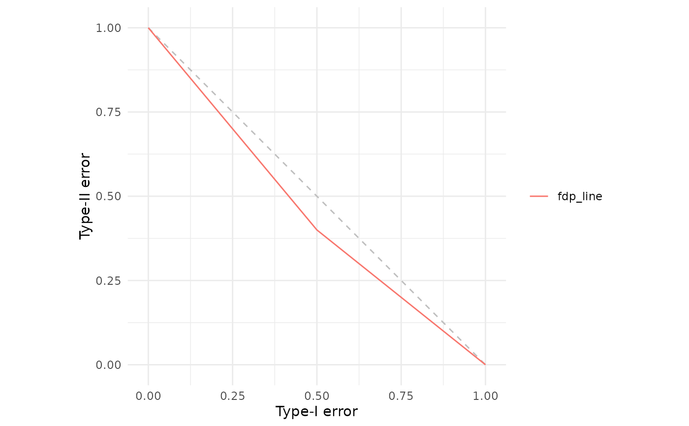
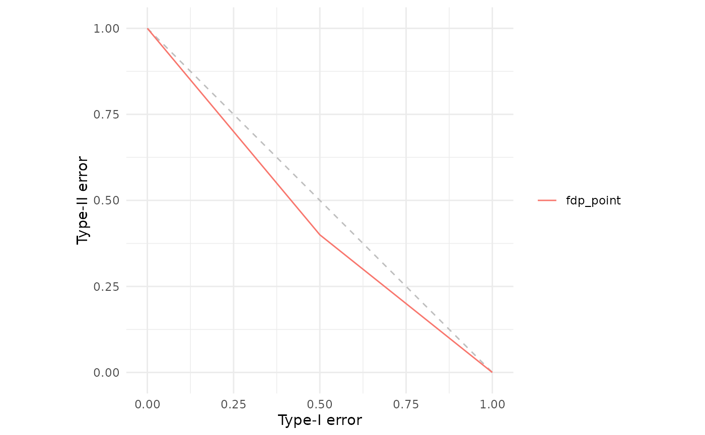
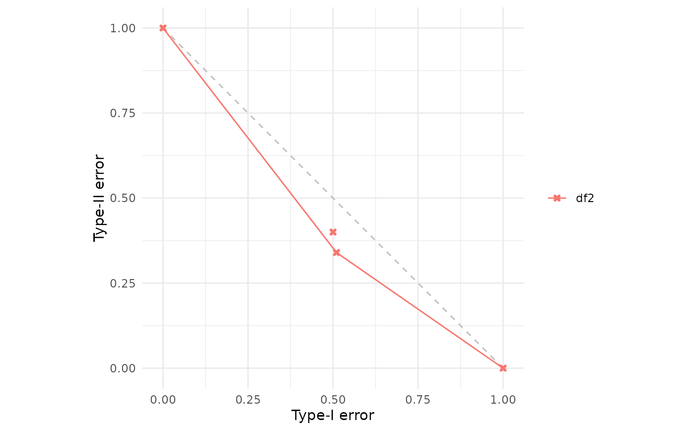
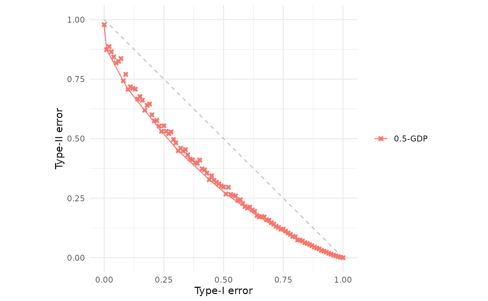
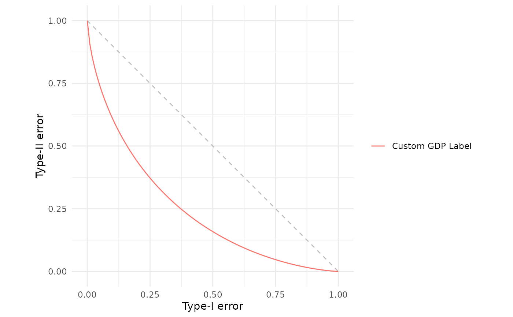

These functions attach attributes to f-DP objects that control their visualization:
fdp_line()forces the object to be rendered as a continuous trade-off function curve. The function validates that the resulting curve is convex (a requirement for valid trade-off functions). Use this for analytic trade-off functions or when you want to ensure convexity is checked.fdp_point()forces the object to be rendered as individual Type I/II error coordinates, with the lower convex hull automatically computed and drawn. Use this for empirical estimates or small datasets where individual points should be visible.fdp_name()sets or retrieves the legend label for the object. When called withnm, it sets the label; when called withoutnm, it returns the current label.fdp_attributes()retrieves all f-DP related attributes attached to an object.
By default, fdp() automatically determines the rendering method: data frames or vectors
with \(\ge 100\) elements are treated as lines (with convexity validation), while those with
\(< 100\) elements are treated as points (with lower hull computation).
Value
For fdp_line(), fdp_point(), and fdp_name() (when setting): the input object x with
modified attributes (returned invisibly).
For fdp_name() (when getting) and fdp_attributes(): the requested attribute value(s) or NULL.
Details
Functions to control how f-differential privacy trade-off functions and empirical
Type I/II error points are rendered by fdp().
See also
fdp() for the main plotting function.
Examples
# Force a small dataset to be drawn as a line (with convexity check)
df <- data.frame(alpha = c(0, 0.5, 1), beta = c(1, 0.4, 0))
fdp(fdp_line(df))

# Draw points but hide them (only show the lower hull)
fdp(fdp_point(df, hide = TRUE))

# Conversely, the following points if interpolated do not define a convex
# trade-off function, so fdp_line would fail
df2 <- data.frame(alpha = c(0, 0.5, 0.51, 1), beta = c(1, 0.4, 0.34, 0))
#fdp(fdp_line(df2)) # Not run, would error
# But the following is ok, since we will compute lower convex hull due to
# small number of points
fdp(df2)

# If you have a large number of points which will not interpolate to give
# convexity, then fdp_point can force that behaviour
df3 <- gdp(0.5)()
df3$beta <- pmin(df3$beta * rnorm(101, 0.95, sd=0.025), 1.0)
#fdp(df3) # Not run, would error
# But wrapping in fdp_point forces plotting points and lower convex hull
fdp(fdp_point(df3))

# Set a custom legend label programmatically, rather than via argument in
# call to fdp ... eg alternative is fdp(`my label` = my_gdp)
my_gdp <- gdp(1)
my_gdp <- fdp_name(my_gdp, "Custom GDP Label")
fdp(my_gdp)
